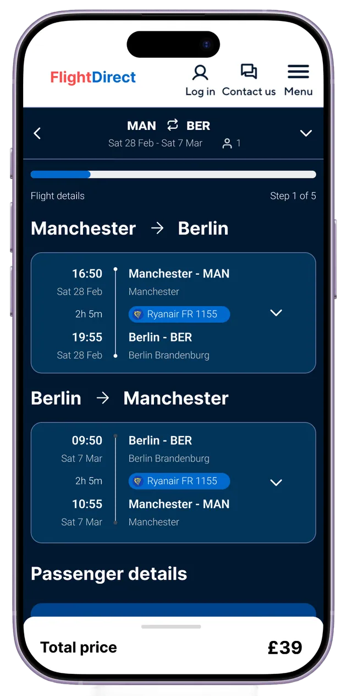
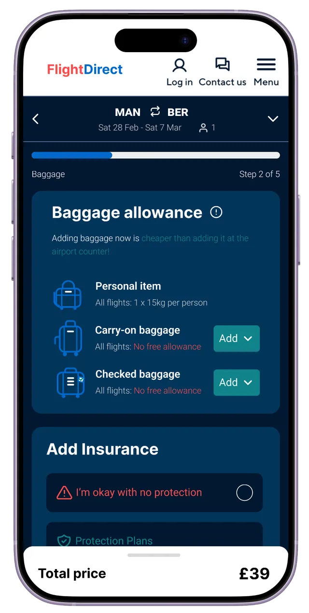
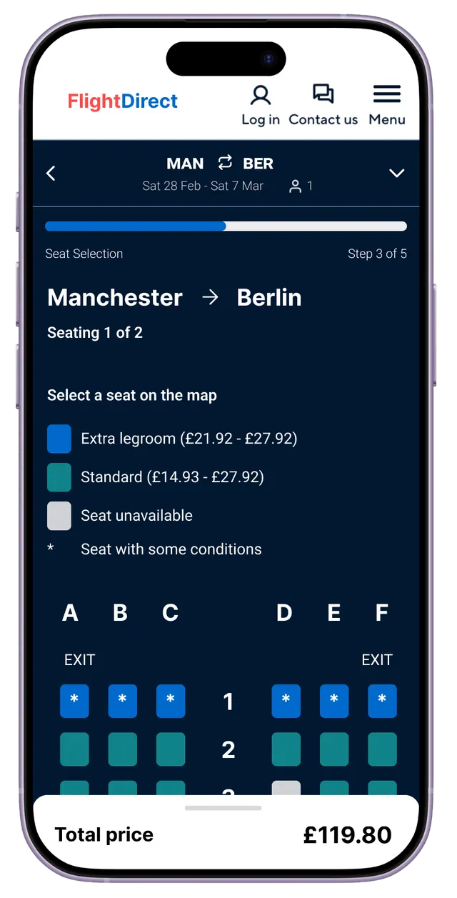
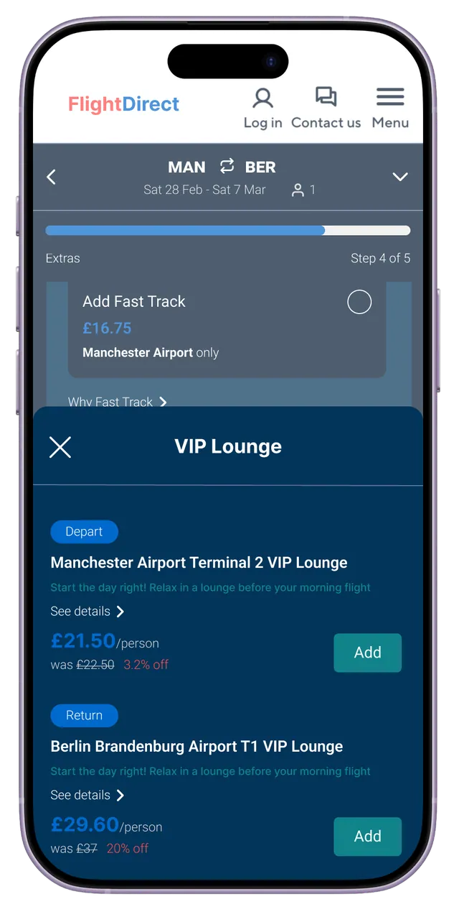
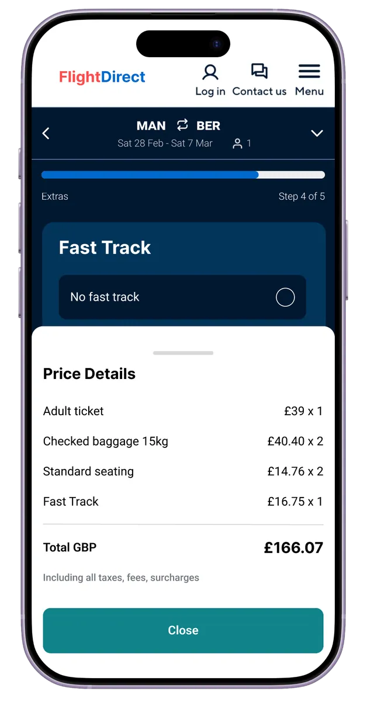

From search to booking: creating a seamless travel experience
Understanding how people move from comparison sites to booking flights, and identifying opportunities to create a simple, seamless and trustworthy experience with relevant upsell opportunities.
Project type
Research & design
Role
UX/UI Designer
Industry
Airline travel
Tools
Miro, Figma
Duration
2 weeks, 2026





01 — The goalResearch objectives
Understand how people move from comparison websites to a provider's booking journey, and design a flight booking experience that's simple, seamless and trustworthy.
01Understand how users currently experience the transition from comparison websites to booking platforms.
02Identify pain points and friction in existing flight booking journeys.
03Explore how upsell opportunities can be integrated without disrupting simplicity.
Familiarising myself with flight booking websites
02 — ResearchCompetitor research
I evaluated how existing flight comparison and booking platforms support users from search to purchase, identifying green flags (effective patterns and best practices) and red flags (pain points, friction and missed opportunities).
This highlighted what works well in creating a seamless experience, and where users may feel overwhelmed, confused or drop off. These insights informed design decisions, building on proven strengths while addressing common usability issues.
Green and red flags across five booking platforms. Select to enlarge.
03 — ResearchFeature analysis
A feature analysis broke down the key elements used across competitor platforms, from flight information to baggage, seat choice and add-ons, looking at how they're presented and integrated throughout the journey.
The goal was to understand which features add value and how they can be introduced without increasing complexity or cognitive load, paying particular attention to how and when upsells appear so they feel relevant and supportive rather than intrusive.
These insights led to a streamlined approach: essential features first, with extras presented clearly and intuitively.
04 — ResearchLiterature review findings
To understand how upselling can work without compromising the experience, I reviewed academic research on airline upselling, psychological pricing, personalised offers and customer decision-making, helping upsells feel relevant, transparent and valuable.
Price thresholdsCustomers judge upgrade prices using psychological thresholds.
Left-digit effectUpgrades are more likely when base and upgrade prices share the same left digit (e.g. both in the £2,000 range).
Colour signals valueShowing the upgrade price in red strengthens the effect by signalling a discount.
Personalise itPersonalised pricing works better than offering everyone the same discount.
Compare side by sideComparison cards clearly show upgrade benefits against the base option.
Keep it focusedSimple, focused choices reduce cognitive load and decision fatigue.
Value over priceHighlight comfort, perks, flexibility and experience, not just cost.
The flow follows the journey from finding a flight on a comparison site such as Skyscanner, through to completing the booking, with upsell opportunities placed along the way.
Scroll sideways or select to enlarge.
06 — IdeateLow-fidelity sketches
Low-fidelity sketches of the flight booking process.
07 — DesignUI design
I defined the elements that make up the high-fidelity designs, starting with colour palette and typography, then building buttons, cards, modals and icons.
Flight details sit at the top: key information at the very start.
Followed by passenger details, collecting only what's necessary.
Step 2 · Upsells 1 & 2
Baggage
Shows the baggage options available, each at an additional fee.
Small green text highlights that adding baggage now is cheaper than at the airport.
Insurance sits with baggage, as on most competitors, without lumping too many extras together. Overwhelming people at one point may mean they buy less.
Step 3 · Upsell 3
Seat selection
Split into two mini steps, one for each flight.
A clear key at the top explains each seat type.
A modal confirms the choice, highlighting seat and price. Choosing a seat is optional.
Step 4 · Final upsells
Extras
Fast track, a flexible ticket and airport lounge access.
The last few upsells, without so many that it becomes overwhelming.
Fast track uses radio buttons, so people actively choose not to add it; the others are added with a button.
Step 5
Payment
A brief summary at the top with the price in bold.
A details link opens a modal summarising everything added.
Several payment options. Digital wallets help people commit to the purchase faster.
09 — ReferencesReferences
Rauhaus, D., Gönsch, J. & Steinhardt, C. (2025). On the value of booking data for upsell decision-making in revenue management. Flexible Services and Manufacturing Journal, 37, 409–442. https://doi.org/10.1007/s10696-024-09545-x
Lee, E., Kim, J., Shin, S. & Koo, C. (2024). Unlocking revenue: psychological pricing effect for airlines' upselling strategies. International Journal of Hospitality Management, 119, 103720. https://doi.org/10.1016/j.ijhm.2024.103720
Thirumuruganathan, S., Al Emadi, N., Jung, S-G., Salminen, J., Robillos, D. R. & Jansen, B. J. (2023). Will they take this offer? A machine learning price elasticity model for predicting upselling acceptance of premium airline seating. Information & Management, 60(3), 103759. https://doi.org/10.1016/j.im.2023.103759
Schubert, D. (2025). Customized airline offer management: solving the assortment problem through multi-dimensional segmentation. PhD dissertation, University of Antwerp.